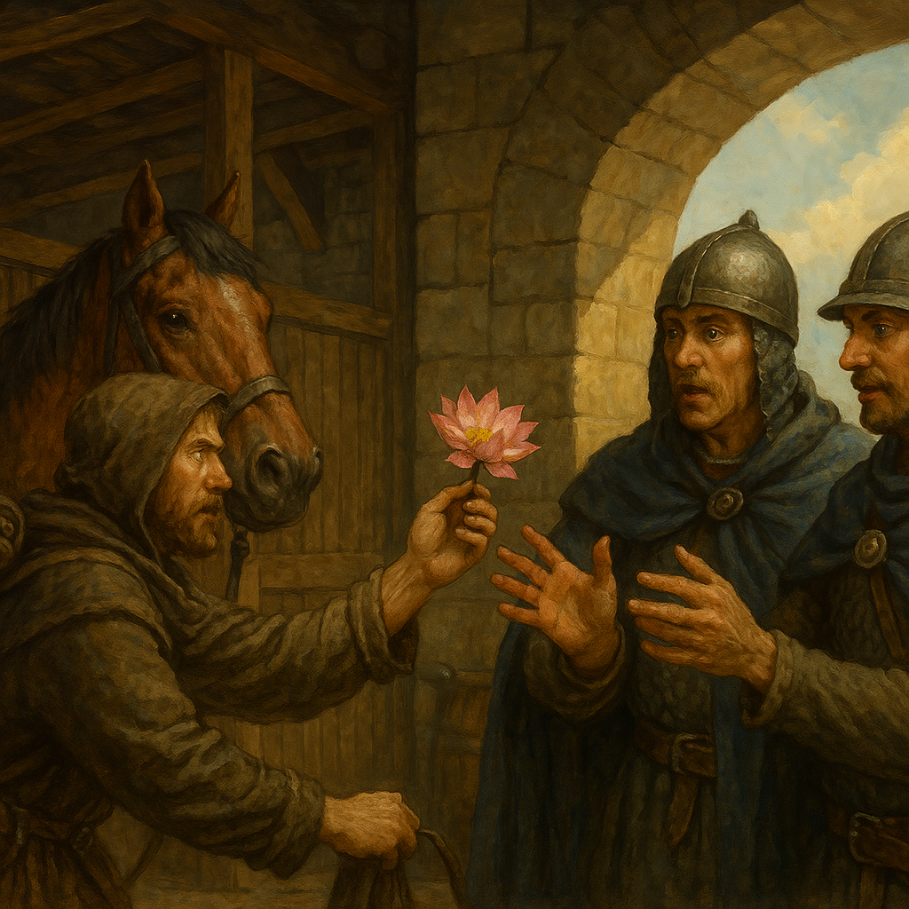

Chapter 5: Farewell, Wescoe
Dark Petals

Dark Petals
15048.11.20
看著剛買到不久的地圖，Brown 思索著下一步該往哪裡去。不論要往哪個方向去，都得先穿越嚎叫森林。
幾經思索後，Brown 決定向夏庭森（Shartingson）去。那裡據說是一個居民組成大部分是石匠的村落。然而，路程並不短，Brown 希望能有機會可以弄到一匹馬。
看著方才如廢墟般的魏斯科，Brown 有種奇異的直覺，決定再度踏入魏斯科的門內。跟在後頭的 Mr. Muffins 瑟瑟發抖，不敢進入，Brown 只好獨自進到城門內。誰知道，一踏過城門，裡頭像是什麼事都沒發生過一樣，欣欣向榮，另 Brown 大感詫異。
Brown 探頭探腦，思索著要去哪裡弄到一批馬。他隨手詢問了路邊一名衛兵。衛兵聽了，便帶領著他，穿越衛兵們的辦公室，來到了馬廄。在衛兵的介紹下，Brown 得知了這裡普遍馬的價錢。
看著馬廄除了帶他認識的衛兵外，只有兩名其他的衛兵正在閒聊，Brown 起了餿主意，向衛兵表示自己有點口渴，不知道能不能弄點喝的？衛兵便回到辦公室幫 Brown 裝水，並要 Brown 利用這個時間好好看看各匹馬。
在衛兵去裝水的期間，Brown 走向了最貴的馬，兩名閒聊中的衛兵便前來關注。Brown 試圖殺價，但效果有限。於是 Brown 從他的背包中掏出一片蓮花花瓣，向衛兵們兜售，表示這是個魔法物品，可以讓人船送到天堂去。衛兵們大感懷疑，但 Brown 讓其中一名衛兵免費嘗試。
在衛兵舔下花瓣的一瞬間，他便消失了，另一名衛兵大感驚詫，也開始展露出了興趣。這時，為 Brown 裝水的衛兵剛好回來了。兩名衛兵討論著這件事。Brown 提出了交易，要用一片花瓣換一匹馬。其中一名衛兵思索後，提出另一個方案：用兩片花瓣換最頂級的馬，還順便貼一些錢給 Brown。Brown 想了想便答應了。
將花瓣遞給兩名衛兵，Brown 騎上馬，頭也不回的騎出了魏斯科，在城門外接走了 Mr. Muffins 後便朝著夏庭森前進。